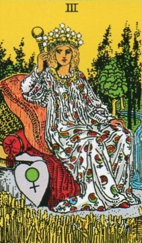
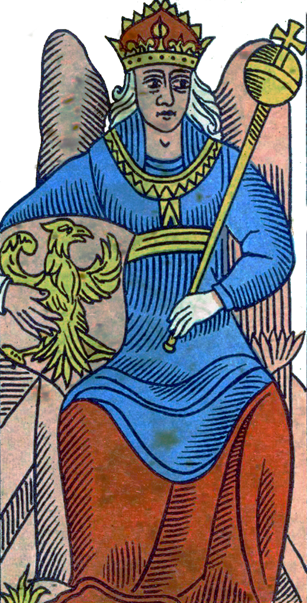
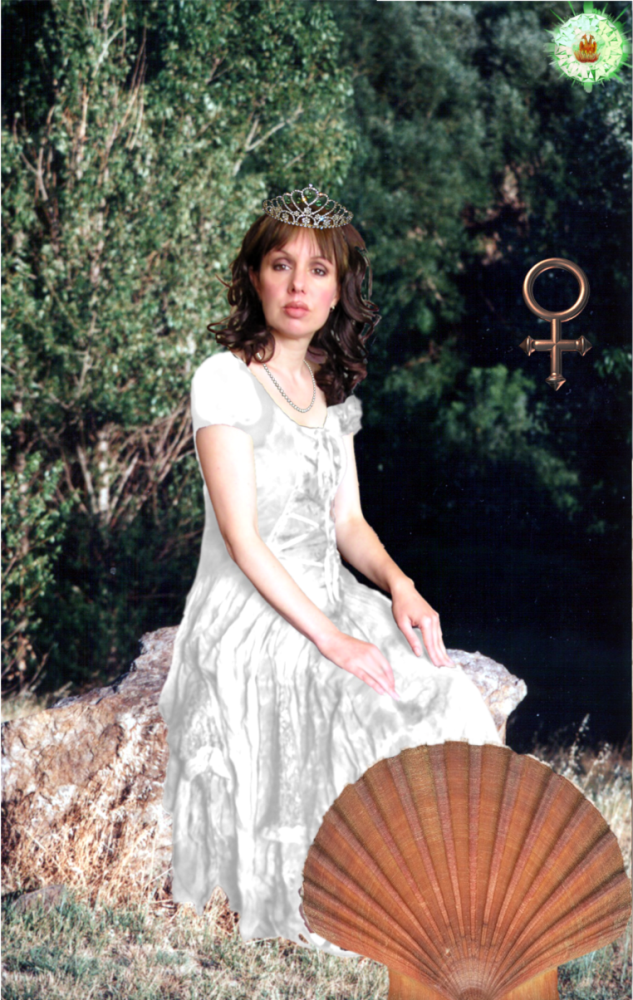
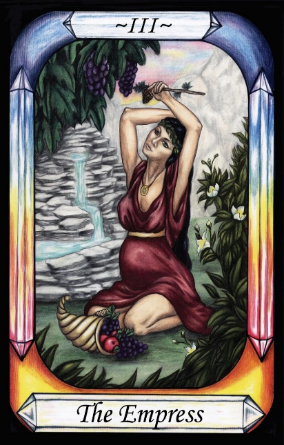

The Empress




Representation |
|
Meaning |
The sexualized version of Venus, consorting with Mars while married to Vulcan |
Opposite Card |
|
Function |
The Empress is Venus, Goddess of most things Feminine, who cuckolded her husband Vulcan, to be with Mars, the dominant alpha-male, Empress to his Emperor.
[P13] … The Demiurge made the seven planetary Governors from the elements of nature. These seven encompass the entire world that is perceived by the senses, and their rule is called Fate.
RWS Imagery
A woman is seated on a plush throne, wearing a white robe decorated with flowers. She wears a crown of stars, and carries a small staff bearing an orb. At her side is a heart shaped shield bearing the astrological symbol for Venus.
Analysis of RWS Imagery
Imagery such as the crown of six pointed stars, and a mace with orb of the world, each have their place in standard Empress symbology, but it is the clear symbol of Venus on a heart shaped shield that cannot be ignored. This is Venus, partnered with the Emperor, Mars.
Discussion
The Empress represents Venus, one of the seven Governors, depicted in her traditional Roman mythology form. Unlike other cards, the symbolism here is straightforward, identifying Venus without additional layered meanings.